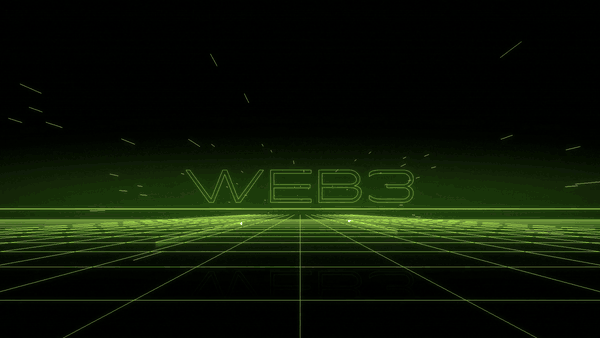
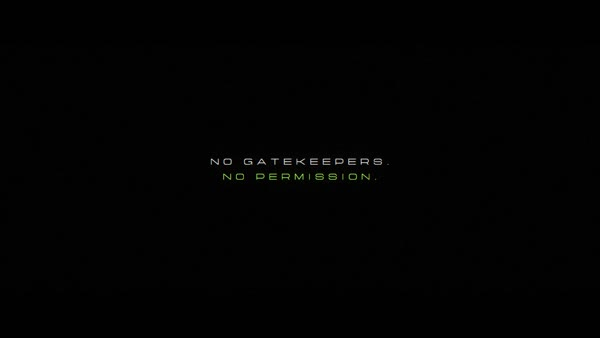
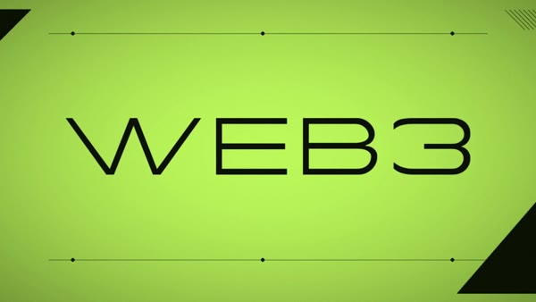
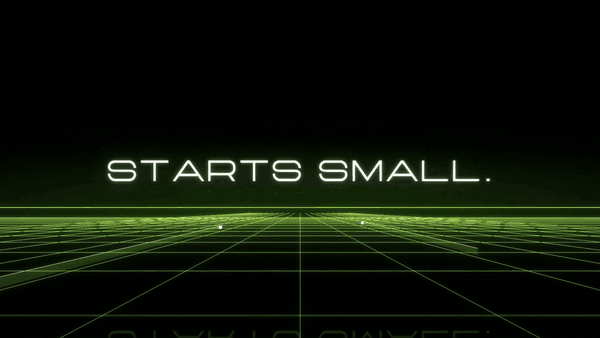
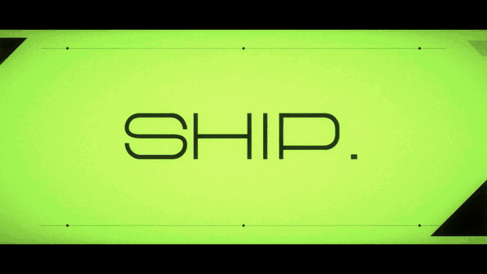
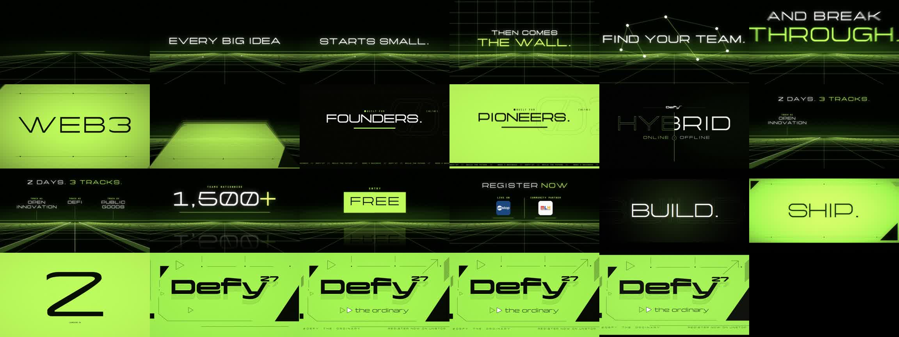

Give your agent your footage, your brand kit and a song. Get back a beat-synced, After-Effects-quality trailer, with sync you can measure and no AI look.

One exact beat grid fitted to your song. Cuts only on strong kicks, never the weak beat.
Audio vs cut reported in milliseconds. The reference drop lands +0.9ms off the beat.
Filter-sweep build, 16th to 32nd stutter, half a beat of silence, then the drop. No stock SFX.
Expo eases, real motion blur, momentum cuts, multiplane depth, cut-on-action.
A single visual system, so the trailer reads as one continuous shot, not stitched clips.
Point it at an old edit and a new song. It re-times, trims flash frames and rebuilds.





# any agent (Claude Code, Cursor, Codex, Copilot, Gemini CLI, opencode, ...) npx skills add https://github.com/Zerko-sd/dropframe --skill dropframe # Claude Code plugin /plugin marketplace add Zerko-sd/dropframe /plugin install dropframe@dropframe # Codex codex plugin marketplace add Zerko-sd/dropframe codex plugin add dropframe@dropframe # needs python 3.10+, ffmpeg, then: pip install numpy pillow scipy librosa
Then just ask: /dropframe make a 30s trailer from ./footage with track.mp3, starting at 0:42
| dropframe | Template / composition skills | |
|---|---|---|
| Starts from | Your footage, brand kit, your song | Your codebase or a prompt; bundled music |
| Music | Beat grid detected; cuts on strong kicks; drop built from your track | Background bed chosen to fit the story |
| Sync | Measured in ms | Timed by the composer |
| Sound | Your song only, remixed | Bundled SFX + optional narration |
| Motion | AE-grade eases, motion blur, momentum cuts, depth | Web/CSS composition animation |
| Re-editing | Re-times and re-themes an existing edit | Generates a new video |
| Output | MP4 + remixed WAV + markers CSV for After Effects | MP4 + share copy |